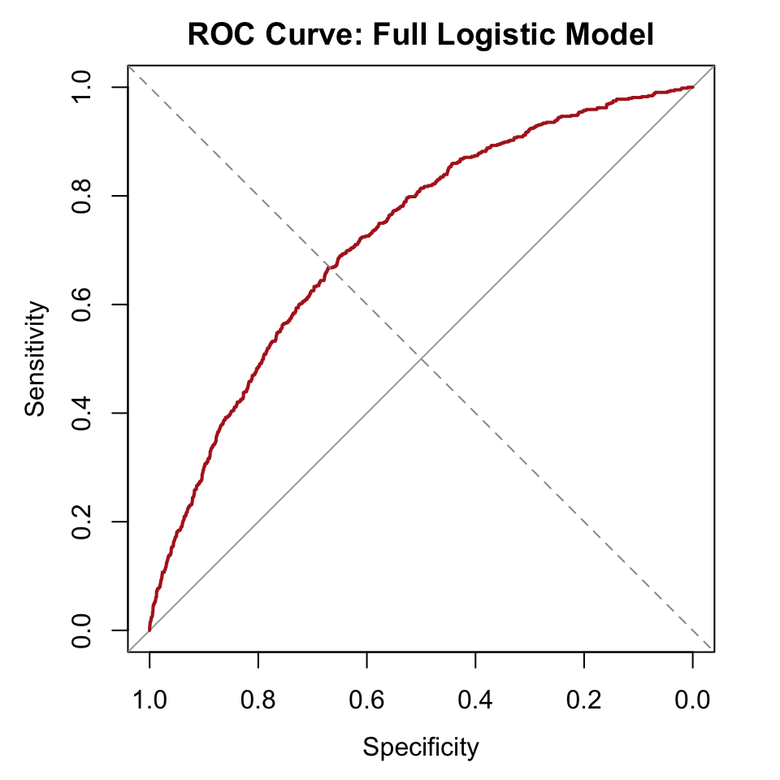
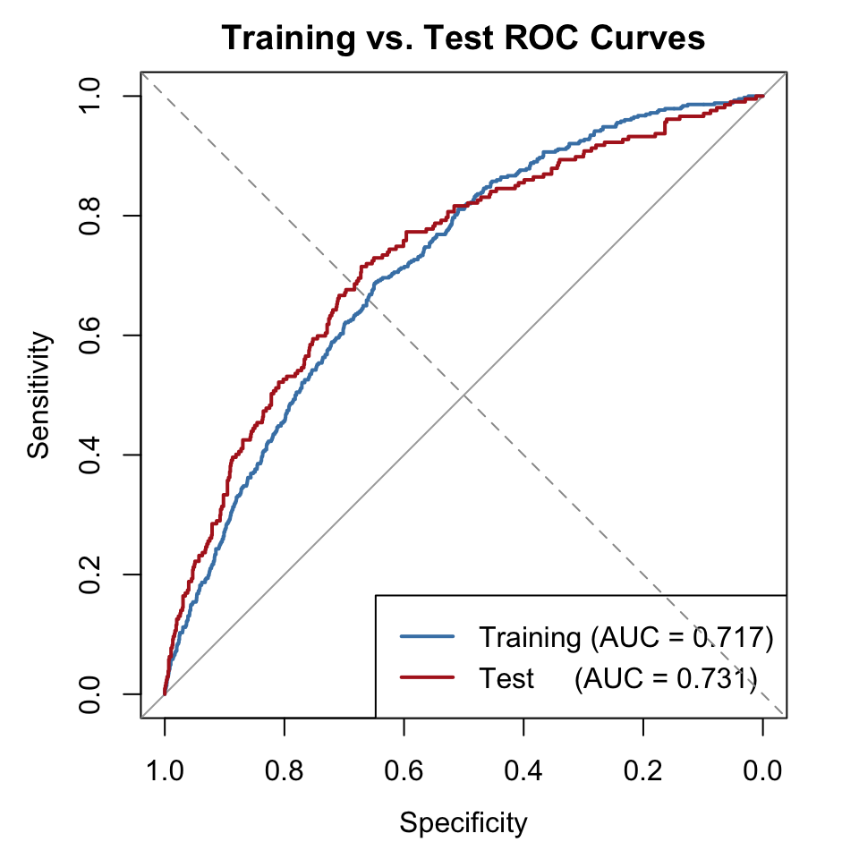

library(tidyverse)
library(this.path)
library(pROC)
setwd(this.dir())
framingham <- read_csv("../../data/framingham.csv") |>
mutate(
male = factor(male, levels = c(0,1), labels = c("Female","Male")),
currentSmoker = factor(currentSmoker, levels = c(0,1), labels = c("Non-smoker","Smoker")),
prevalentHyp = factor(prevalentHyp, levels = c(0,1), labels = c("No","Yes")),
diabetes = factor(diabetes, levels = c(0,1), labels = c("No","Yes")),
TenYearCHD = factor(TenYearCHD, levels = c(0,1), labels = c("No","Yes")),
education = factor(education, levels = 1:4,
labels = c("Some HS","HS Diploma","Some College","College Degree"))
)Day 9 (PM) Lab: Classification and Predictive Performance – Solutions
SC INBRE Biostatistics Summer Intensive 2026
1 Exercise 1 – Predicted Probabilities from Two Models
1.1 Part a: Restrict to complete cases
vars_used <- c("TenYearCHD", "age", "currentSmoker", "sysBP",
"totChol", "diabetes")
framingham_cc <- framingham |>
drop_na(all_of(vars_used))
nrow(framingham) - nrow(framingham_cc)[1] 50A small number of rows are dropped due to missing values on one or more of the variables. All subsequent exercises use framingham_cc so that both models are always fit on the same observations.
1.2 Part b: Fit two models
model_simple <- glm(TenYearCHD ~ age,
data = framingham_cc,
family = binomial)
model_full <- glm(TenYearCHD ~ age + currentSmoker + sysBP + totChol + diabetes,
data = framingham_cc,
family = binomial)1.3 Part c: Add predicted probabilities
framingham_cc <- framingham_cc |>
mutate(
p_simple = predict(model_simple, type = "response"),
p_full = predict(model_full, type = "response")
)1.4 Part d: Compare the spread of predicted probabilities
framingham_cc |>
select(p_simple, p_full) |>
summary() p_simple p_full
Min. :0.03833 Min. :0.02216
1st Qu.:0.07924 1st Qu.:0.07334
Median :0.12854 Median :0.11976
Mean :0.15155 Mean :0.15155
3rd Qu.:0.20180 3rd Qu.:0.19799
Max. :0.42619 Max. :0.80235 Both sets of predicted probabilities are bounded between 0 and 1 and centered near the overall event rate (about 15%). The full model produces a wider spread than the simple model: its minimum is lower and its maximum is higher. This makes intuitive sense because the full model uses more information and can more confidently assign very low risk to healthy-profile participants and very high risk to high-risk participants. A model with no predictive ability at all would output the same probability (the event rate, about 0.15) for everyone. Wider spread signals that the model is doing more discriminative work.
2 Exercise 2 – Confusion Matrices at Different Thresholds
2.1 Part a and b: Classifications and confusion matrices at three thresholds
framingham_cc <- framingham_cc |>
mutate(
pred_10 = factor(if_else(p_full > 0.10, "Yes", "No"), levels = c("No","Yes")),
pred_20 = factor(if_else(p_full > 0.20, "Yes", "No"), levels = c("No","Yes")),
pred_50 = factor(if_else(p_full > 0.50, "Yes", "No"), levels = c("No","Yes"))
)
tab_10 <- table(Predicted = framingham_cc$pred_10, Actual = framingham_cc$TenYearCHD)
tab_20 <- table(Predicted = framingham_cc$pred_20, Actual = framingham_cc$TenYearCHD)
tab_50 <- table(Predicted = framingham_cc$pred_50, Actual = framingham_cc$TenYearCHD)
cat("Threshold = 0.10\n"); tab_10Threshold = 0.10 Actual
Predicted No Yes
No 1613 102
Yes 1942 533cat("\nThreshold = 0.20\n"); tab_20
Threshold = 0.20 Actual
Predicted No Yes
No 2838 326
Yes 717 309cat("\nThreshold = 0.50\n"); tab_50
Threshold = 0.50 Actual
Predicted No Yes
No 3531 605
Yes 24 302.2 Part c: What happens as the threshold increases?
As the threshold increases from 0.10 to 0.50, the number of predicted positives decreases substantially and the number of predicted negatives increases. At 0.10, we flag a large fraction of the cohort as predicted CHD cases. At 0.50, almost nobody clears the threshold because only about 15% of participants actually develop CHD and most predicted probabilities are well below 0.50. The total number of observations stays the same; we are simply re-drawing the line between “positive” and “negative” classifications.
3 Exercise 3 – Computing Sensitivity, Specificity, PPV, NPV
3.1 Part a: Compute metrics at each threshold
compute_metrics <- function(tab) {
TP <- tab["Yes", "Yes"]
FP <- tab["Yes", "No"]
TN <- tab["No", "No"]
FN <- tab["No", "Yes"]
tibble(
Sensitivity = TP / (TP + FN),
Specificity = TN / (TN + FP),
PPV = TP / (TP + FP),
NPV = TN / (TN + FN)
)
}
bind_rows(
compute_metrics(tab_10) |> mutate(Threshold = 0.10),
compute_metrics(tab_20) |> mutate(Threshold = 0.20),
compute_metrics(tab_50) |> mutate(Threshold = 0.50)
) |>
select(Threshold, everything()) |>
round(3)# A tibble: 3 × 5
Threshold Sensitivity Specificity PPV NPV
<dbl> <dbl> <dbl> <dbl> <dbl>
1 0.1 0.839 0.454 0.215 0.941
2 0.2 0.487 0.798 0.301 0.897
3 0.5 0.047 0.993 0.556 0.8543.2 Part b: Which threshold gives the highest sensitivity? Highest specificity?
The lowest threshold (0.10) gives the highest sensitivity: we flag so many people as positive that we catch most of the true CHD cases, but at the cost of many false alarms (low specificity). The highest threshold (0.50) gives the highest specificity: almost everyone is classified as negative, so we rarely accuse a healthy person of having CHD, but we miss nearly all the true cases (near-zero sensitivity). Sensitivity and specificity move in opposite directions as the threshold changes. You cannot maximize both simultaneously with a fixed model. Improving one always comes at the expense of the other, which is why the ROC curve is useful: it shows the full tradeoff across every possible threshold rather than locking you into one.
3.3 Part c: Why is PPV low at every threshold?
PPV is low because CHD is relatively rare in this cohort (about 15% event rate). Even a model with good sensitivity will generate many false positives when it flags a large portion of the population, because most of that population is truly healthy. This is the base-rate problem: if only 1 in 7 people has the condition and the model flags 1 in 3 as positive, at least half of those flagged will be false positives even if the model is working well. PPV is not just a property of the model; it depends on the prevalence of the condition in the population being tested.
4 Exercise 4 – ROC Curve and AUC
4.1 Part a: Build the ROC curve
roc_full <- roc(framingham_cc$TenYearCHD, framingham_cc$p_full,
levels = c("No", "Yes"), direction = "<")4.2 Part b: Plot and describe
plot(roc_full,
col = "firebrick",
lwd = 2,
main = "ROC Curve: Full Logistic Model")
abline(a = 0, b = 1, lty = 2, col = "gray60")
The curve bows noticeably above the diagonal, which represents a coin-flip classifier with no predictive value. The curve rises steeply on the left side, indicating that the model achieves reasonably high sensitivity before accumulating many false positives. It does not hug the top-left corner tightly, which is typical for clinical risk models predicting a complex outcome like CHD: the event is influenced by many unmeasured factors, so no short set of predictors can achieve near-perfect discrimination.
4.3 Part c: AUC and interpretation
auc(roc_full)Area under the curve: 0.7221The AUC is approximately 0.72–0.75 (exact value updates on render). By the interpretation table from the morning lecture, this places the model in the acceptable range (0.70–0.80). The model discriminates between CHD cases and non-cases meaningfully, but it is far from perfect. This is a reasonable result for a five-predictor model predicting a multifactorial cardiovascular outcome in a general population cohort.
5 Exercise 5 (Challenge) – Honest AUC via Train/Test Split
5.1 Parts a–c: Split, fit, and predict
set.seed(2026)
n <- nrow(framingham_cc)
train_idx <- sample(seq_len(n), size = round(0.7 * n))
train <- framingham_cc[train_idx, ]
test <- framingham_cc[-train_idx, ]
cat("Training rows:", nrow(train), "\n")Training rows: 2933 cat("Test rows: ", nrow(test), "\n")Test rows: 1257 model_train <- glm(TenYearCHD ~ age + currentSmoker + sysBP + totChol + diabetes,
data = train,
family = binomial)
test <- test |>
mutate(p_test = predict(model_train, newdata = test, type = "response"))5.2 Part d: Training AUC vs. test AUC
roc_train <- roc(train$TenYearCHD,
predict(model_train, type = "response"),
levels = c("No","Yes"), direction = "<")
roc_test <- roc(test$TenYearCHD, test$p_test,
levels = c("No","Yes"), direction = "<")
tibble(
Dataset = c("Training", "Test"),
N = c(nrow(train), nrow(test)),
AUC = c(as.numeric(auc(roc_train)),
as.numeric(auc(roc_test)))
)# A tibble: 2 × 3
Dataset N AUC
<chr> <int> <dbl>
1 Training 2933 0.717
2 Test 1257 0.731plot(roc_train, col = "steelblue", lwd = 2,
main = "Training vs. Test ROC Curves")
plot(roc_test, col = "firebrick", lwd = 2, add = TRUE)
legend("bottomright",
legend = c(paste0("Training (AUC = ", round(auc(roc_train), 3), ")"),
paste0("Test (AUC = ", round(auc(roc_test), 3), ")")),
col = c("steelblue", "firebrick"), lwd = 2)
abline(a = 0, b = 1, lty = 2, col = "gray60")
The test AUC is typically a few points lower than the training AUC. The gap here is small (often less than 0.02), which suggests the model is not badly over-fitting. With only five predictors and over 4,000 observations, there is not much room for the model to memorize noise in the training data.
5.3 Part e: Discussion
The test AUC is a more honest estimate because the model has never seen the test observations during fitting. When we evaluate AUC on the training data, the model has already been optimized to fit those exact observations, so it inevitably looks a little better than it really is. The test set breaks this feedback loop by holding out data the model cannot cheat on.
If the gap between training and test AUC were very large (for example, 0.85 vs. 0.65), that would signal severe over-fitting: the model has learned idiosyncrasies of the training data that do not generalize. This is most likely to happen when the model has many predictors relative to the number of events, or when variable selection was performed on the training data. In such cases, cross-validation (Day 7) provides a more stable estimate than a single train/test split, because it averages over multiple test sets rather than depending on one lucky or unlucky random split.